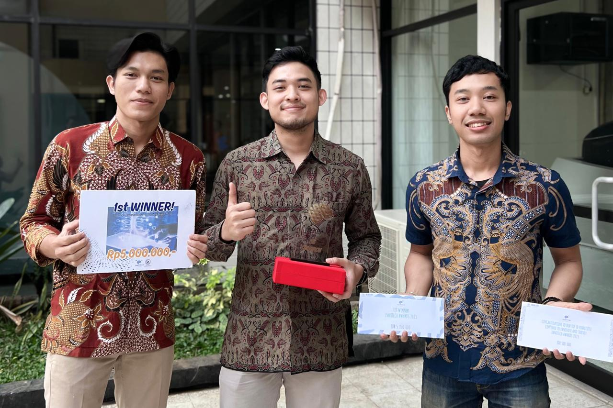
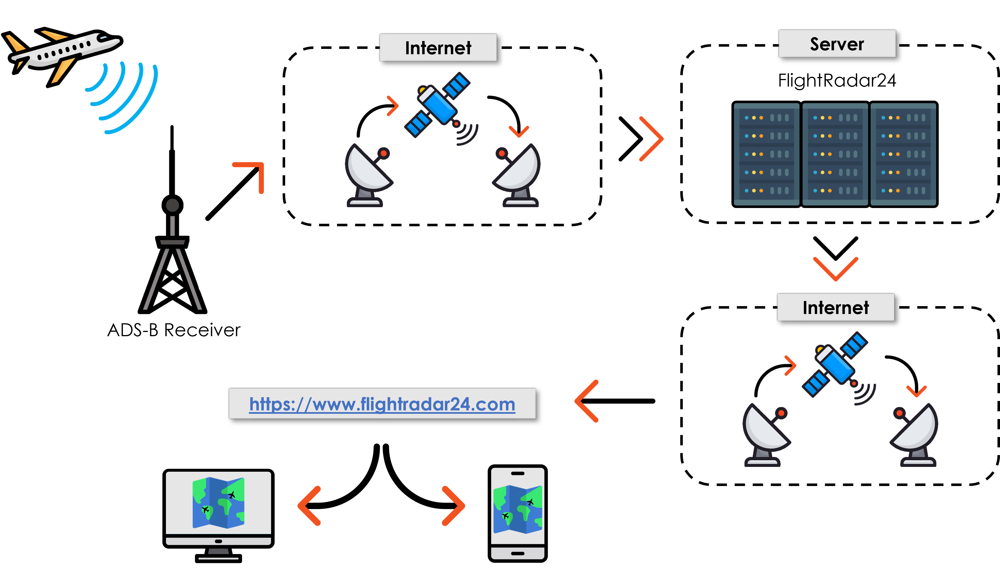

Innotech Awards 2023 adalah kompetisi inovasi teknologi pertama yang diselenggarakan oleh Direktorat Niaga, Teknologi dan Pengembangan, PT Dirgantara Indonesia.
Kegiatan ini merupakan wadah bagi seluruh karyawan PT Dirgantara Indonesia untuk menuangkan segala bentuk ide dan inovasi demi kemajuan bisnis dan keberlanjutan perusahaan mengingat perkembangan dunia yang sangat cepat dan tidak dapat diprediksi.
Gambaran Umum Perlombaan
Innotech Awards 2023 adalah ajang kompetisi inovasi pertama di PT Dirgantara Indonesia yang mengusung tema “Rewarding Bright Minds”, mendorong seluruh karyawan aktif untuk berkontribusi dengan ide-ide inovatif, baik secara individu maupun kelompok lintas direktorat. Ide yang diajukan bersifat orisinal, aplikatif, dan belum pernah dikomersialisasikan maupun diikutsertakan dalam lomba sejenis. Peserta hanya diperbolehkan mengirimkan satu proposal inovasi yang dapat mencakup pengembangan produk, perbaikan proses bisnis, efisiensi fasilitas, hingga peluang bisnis baru.
Proses seleksi akan menilai aspek inovasi, originalitas, aplikasi, efisiensi biaya, keberlanjutan, dampak bisnis, dan potensi kolaborasi lintas bidang. Peserta terbaik akan maju ke tahap final untuk mempresentasikan ide di hadapan juri, dengan keputusan juri bersifat mutlak dan rahasia proposal dijamin menjadi hak milik perusahaan.
My Teams
Saya membentuk Tim yang terdiri dari 3 orang dan Saya sebagai ketua kelompok dengan Pitch Number 62, Tim kami membawakan judul ide inovasi yang muncul berdasarkan permasalahan yang terjadi dilapangan, yaitu "PENERAPAN & PENGEMBANGAN ADS-B RECEIVER"
Introduction Inovation
Kegiatan Flight Test merupakan tahap akhir dalam proses produksi dan maintenance pesawat maupun helikopter, di mana data penerbangan biasanya didukung oleh sistem FTIS. Pada November-Desember 2022, Flight Test Center (FTC) terlibat dalam Video Downlink (VDL) Development Flight Test untuk pesawat CN235-200 (AX-2349). Selama pelaksanaan, terjadi kendala berupa hilangnya sinyal dari pesawat ke Receiver Ground VDL, sehingga data dan video tidak dapat diterima secara optimal.

Sebagai solusi sementara, antena Receiver Ground VDL digerakkan manual menggunakan software dengan bantuan informasi bearing pesawat yang diperoleh dari aplikasi FlightRadar24 di komputer dan smartphone tim. FlightRadar24 memberikan data real-time penerbangan seperti posisi, arah, ketinggian, dan kecepatan pesawat, serta memiliki fitur replay data penerbangan sebelumnya.
Aplikasi FlightRadar24 berperan penting dalam mendukung kegiatan Flight Test, bahkan fasilitas monitor khusus untuk menampilkan FlightRadar24 disediakan di Mission Operation Control Room (MOCR) di Menara FTC. Untuk mendukung kelancaran Flight Test pesawat N219, FTC juga berlangganan paket premium FlightRadar24 karena beberapa data penting hanya tersedia dalam paket berbayar. Langganan ini diperpanjang sesuai kebutuhan selama program Development Flight Test N219 berlangsung.
FlightRadar24 adalah aplikasi populer yang mengumpulkan data pesawat dari ADS-B Receiver di seluruh dunia melalui jaringan sukarelawan, lalu menampilkannya secara real-time di peta internet.
Kekurangan FlightRadar24 :
- Cakupan Terbatas - Tidak semua wilayah terjangkau, sehingga beberapa penerbangan sulit dilacak.
- Fitur Terbatas (Gratis) - Data historis dan fitur analisis lengkap hanya tersedia untuk pengguna berbayar.
- Ketergantungan Internet - Membutuhkan koneksi internet stabil, jika lemah atau tidak ada, fitur pelacakan terganggu.
- Ketergantungan Data Publik - Mengandalkan receiver sukarelawan yang bisa menyebabkan keterlambatan dan ketidakakuratan data.
Pentingnya Data Real-Time untuk Flight Test
Dalam uji penerbangan (Flight Test), data real-time sangat penting untuk memantau kinerja pesawat, mengidentifikasi masalah, dan merespons kondisi penerbangan secara cepat, seperti kecepatan, ketinggian, dan atitude pesawat.
Kebutuhan di PTDI
Untuk mendukung Flight Test di PTDI, diperlukan pengembangan ADS-B Receiver yang terkoneksi langsung ke jaringan lokal perusahaan. Dengan sistem ini, tim penguji dapat memantau data penerbangan secara langsung, akurat, dan tanpa bergantung pada pihak ketiga seperti FlightRadar24.
Innovation Description
Inovasi Penerapan & pengembangan ADS-B Receiver untuk mengatasi kendala yang dihadapi dilapangan saat kegiatan Flight Test. Berikut diagram konsep dari penerapan dan pengembangan ADS-B Receiver,

Diagram di atas menggambarkan konsep penerapan dan pengembangan ADS-B Receiver di Menara FTC PT Dirgantara Indonesia. Pesawat mengirimkan data melalui transponder di frekuensi 1090 MHz yang diterima antena di rooftop Menara FTC dengan jangkauan maksimal 225 Nautical Miles (416,7 km) dalam kondisi LOS (Line of Sight). Data ini diproses dan ditampilkan dalam bentuk peta web yang dapat diakses melalui jaringan internal perusahaan.
- 3D Visual Plane
Menampilkan visualisasi pesawat dalam tampilan orang ketiga (third-person view) menggunakan data dari ADS-B Receiver, mendukung visualisasi saat Flight Test. - Plane Notification Alert
Mengirimkan notifikasi terkait aktivitas penerbangan (take-off dan landing) ke email atau media sosial karyawan yang berkepentingan. - Automatic Rotor Antenna
Solusi otomatisasi antena telemetry di Menara FTC yang saat ini mengalami kerusakan, agar antena dapat melacak pesawat secara otomatis. - ADS-B Receiver Portable
Versi portable yang tidak bergantung pada jaringan internet dan dapat dibawa ke luar area PTDI untuk mendukung Flight Test di lokasi lain dengan tetap menyajikan data pesawat secara real-time.
Implementation Plan
- ADS-B Receiver

- Antenna : Menerima sinyal data pesawat di frekuensi 1090 MHz, mengubahnya menjadi sinyal listrik, dan meneruskan ke receiver. Jenis antena yang digunakan adalah Omnidirectional.
- Receiver :
Terdiri dari beberapa perangkat keras dan lunak, yaitu:
- Mode-S Beast GPS Jetvision : Mengubah sinyal dari antena menjadi data mentah (raw).
- Raspberry Pi 3 Model B+ : Menjalankan program dan menghubungkan receiver ke jaringan internal PTDI.
- Virtual Radar Server (VRS) : Mengolah data raw menjadi visualisasi peta dunia beserta informasi posisi pesawat berbasis web. virtualradarserver.co.uk
- Network : Receiver terhubung ke jaringan lokal PTDI melalui Switch IT PTDI, memungkinkan data diakses dari komputer manapun di jaringan yang sama melalui alamat: http://[IP local]/VirtualRadar/desktop.html, menampilkan peta dunia dan informasi pesawat terdeteksi.
- 3D Visual Plane

- Virtual Radar Server (VRS) : Mengolah data ADS-B dari pesawat menjadi visualisasi peta dunia berbasis web. Data pesawat tersedia dalam format JSON yang bisa dimanfaatkan untuk kebutuhan 3D Visual.
- JSON : Format data terstruktur yang dapat diakses dari VRS melalui alamat lokal: http://[IP local]/VirtualRadar/AircraftList.json.
- Program Python :
Terdiri dari dua program:
- Get Data JSON : Mengambil data dari VRS dan menyimpannya dalam format CSV. GetJSON.py
- Parsing to X-Plane : Mengirimkan data CSV ke plugin LiveTraffic agar bisa ditampilkan pada simulator X-Plane. SendTraffic.py
- Data CSV : Format data sederhana berisi informasi penerbangan yang dipisahkan oleh koma, digunakan sebagai perantara antara VRS dan X-Plane. Data CSV
- Plugin LiveTraffic : Plugin di X-Plane yang menampilkan lalu lintas penerbangan real-time menggunakan data tracking publik. LiveTraffic
- X-Plane : Software flight simulator dari Laminar Research yang digunakan untuk visualisasi 3D, mendukung Windows, macOS, dan Linux (versi terbaru: X-Plane 12).
- Plane Notification Alert

- Virtual Radar Server (VRS) : Mengolah data ADS-B dari pesawat dan menampilkan peta dunia berbasis web. Data pesawat tersedia dalam format JSON di: http://[IP local]/VirtualRadar/AircraftList.json.
- Plugin PlaneAlerter : Plugin yang mengirimkan notifikasi otomatis jika pesawat terdeteksi sesuai kriteria tertentu (registrasi, ketinggian, kecepatan, dll.) PlaneAlerter.
- Internet & Email : Internet PTDI digunakan agar notifikasi bisa dikirim ke email, yang bisa disesuaikan penerimanya (lebih dari satu email).
- WhatsApp Business API : Dapat digunakan sebagai opsi tambahan untuk mengirim notifikasi ke WhatsApp karyawan atau pihak terkait secara otomatis.
- WhatsApp : Aplikasi pesan lintas platform yang memungkinkan penerimaan notifikasi secara langsung melalui teks atau media lainnya.
- Automatic Rotor Antenna
- Virtual Radar Server (VRS) : Mengolah data ADS-B dan menampilkan peta dunia berbasis web. Data pesawat tersedia dalam format JSON.
- Program Auto Track : Program desktop (dengan GUI) yang menghitung sudut bearing antara antena dan pesawat, menggunakan input manual atau otomatis dari data JSON. Perintah sudut bearing dikirim ke Arduino.
- Arduino : Mengubah perintah dari Auto Track menjadi sinyal untuk mengontrol motor stepper.
- Driver Controller : Menerima sinyal dari Arduino, mengatur tegangan dan arus ke motor stepper.
- Motor Stepper : Menggerakkan antena telemetry berdasarkan perintah yang diterima.
- Antenna Telemetry : Berputar sesuai perintah untuk melacak posisi pesawat secara otomatis.
- ADS-B Receiver Portable

- Antenna : Menerima sinyal pesawat di frekuensi UHF (1090 MHz) dengan jenis omnidirectional.
- RTL-SDR : Receiver berbasis Software Defined Radio (SDR) yang mengubah sinyal RF menjadi data digital.
- Raspberry Pi : Menjalankan program pengolahan data dan visualisasi menggunakan Virtual Radar Server.
- Power Bank : Menyediakan daya 5VDC untuk semua perangkat.
- Virtual Radar Server (VRS) : Mengolah data pesawat dan menampilkan peta serta informasi pesawat dalam bentuk web base.
- Display Touch Screen 7” : Menampilkan data dan peta langsung di layar serta memudahkan pengguna memberi input langsung ke Raspberry Pi.
Implementation Result
- Hasil Penerapan ADS-B Receiver
Berdasarkan konsep dari rencana implementasi berikut dokumentasi hasil penerapan ADS-B Receiver di Menara FTC yang sudah diimplementasikan. Hasil implementasi Antenna Receiver,
Tampilan map Receiver yang diakses pada web browser dengan alamat, http://[IP local]/VirtualRadar/
Berikut tampilan histori jangkauan Receiver, dapat menerima altitude pesawat pada <9999 - >30000 feet dengan jarak terjauh ± 177 nautical miles
Tampilan pada map Virtual Radar Server dapat dilakukan kustomisasi sesuai dengan kebutuhan, berikut ini adalah beberapa hasil kustomisasi layer dari map,
- Hasil Pengembangan 3D Visual
Berdasarkan konsep dari rencana implementasi berikut dokumentasi hasil pengembangan 3D Visual dengan memanfaatkan data dari Receiver ADS-B menara FTC, Data Virtual Radar Server dengan Format JSON yang diakses dengan alamat, http://[IP local]/VirtualRadar/AircraftList.json,

Berikut dokumentasi dari program GetJSON.py untuk mengambil data JSON, data disimpan dengan format CSV,
Data CSV hasil dari program GetJSON.py dengan pengambilan data per detik
Program python yang kedua bernama SendTraffic.py yang digunakan untuk mengirim data CSV ke plugin Live Traffic, dijalankan melalui Terminal Command Line,
Selanjutnya tampilan dari plugin Live Traffic yang berjalan di aplikasi simulator XPlane,
Hasil pengembangan 3D Visual pada program XPlane dan membandingkan map XPlane dengan map Virtual Radar Server yang diakses pada web browser,
- Hasil Pengembangan Plane Notification Alert
Berdasarkan konsep dari rencana implementasi berikut dokumentasi hasil pengembangan Plane Notification Alert dengan memanfaatkan data dari Receiver ADS-B menara FTC, Data Virtual Radar Server dengan Format JSON yang diakses dengan alamat, http://[IP local]/VirtualRadar/AircraftList.json, Tampilan utama dari Plugin Plane Alerter saat pertama kali dijalankan, belum terdapat kondisi yang terbaca oleh program,
Memberikan kondisi untuk Plugin Plane Alerter, dengan trigger registrasi pesawat PKGTD sebagai uji coba program,
Program Plugin Plane Alerter berjalan dan langsung mendeteksi pesawat dengan kondisi yang sudah diberikan, maka ketika kondisi sesuai program akan mengirimkan email yang sudah didaftarkan sebagai penerima,
Selanjutnya dokumentasi dari kotak masuk email penerima notifikasi,
Berikut adalah isi dari pesan email penerima yang dikirimkan oleh Plugin PlaneAlerter, berisi data informasi dari pesawat PK-GTD, sesuai dengan perintah kondisi yang diberikan,
- Hasil Pengembangan Portable ADS-B Receiver
Berdasarkan konsep dari rencana implementasi berikut dokumentasi hasil pengembangan Portable ADS-B Receiver. Receiver dirancang dengan gabungan beberapa perangkat,
Kegiatan uji coba dari dari hasil pengembangan Portable ADS-B Receiver, untuk menguji penerimaan data,
Technology & Resources
Tulisan ini membahas penerapan dan pengembangan ADS-B (Automatic Dependent Surveillance - Broadcast) Receiver, yaitu teknologi berbasis satelit yang digunakan untuk menyampaikan informasi pesawat seperti posisi, kecepatan, arah, ketinggian, dan identitas pesawat melalui frekuensi 1090 MHz (Mode S).
ICAO mewajibkan semua pesawat sipil angkut menggunakan teknologi ADS-B sebagai pengganti radar konvensional, dengan Mode S 1090 MHz sebagai standar global.
- Automatic - Informasi ditransmisikan otomatis tanpa campur tangan pilot.
- Dependent - Data posisi dan kecepatan berasal dari GPS atau sistem navigasi pesawat.
- Surveillance - Menyediakan data posisi, kecepatan, identitas, dll.
- Broadcast - Data dipancarkan terus-menerus tanpa perlu interogasi eksternal.
Gambar diatas merupakan proses ADS-B Receiver bekerja, pertama Pesawat menerima informasi posisi dari GNSS (Global Navigation Satellite System), kemudian Transponder ADS-B di pesawat menyiarkan (broadcast) data ke segala arah dan ADS-B Receiver di darat menangkap data tersebut, selanjutnya Data diolah dan ditampilkan secara real-time di layar Air Traffic Control (ATC), mencakup informasi lengkap seperti ketinggian, kecepatan, dan identitas pesawat. Keunggulan dari ADS-B yaitu dapat update data cepat (setiap 0,5 - 1 detik), menghasilkan data lebih akurat.
Closing thoughts
Inovasi Penerapan dan Pengembangan ADS-B di PT Dirgantara Indonesia mendukung kegiatan Flight Test melalui beberapa poin utama :
- Mengurangi Ketergantungan pada FlightRadar24
Menggunakan Receiver ADS-B sendiri untuk pemantauan real-time, mengatasi keterlambatan dan keterbatasan data. - Visualisasi 3D dan Data Real-time
Menampilkan visualisasi 3D dan data penerbangan real-time di MOCR, meningkatkan analisis dan pengambilan keputusan. - Aplikasi Notifikasi Pesawat
Mengembangkan aplikasi notifikasi kondisi pesawat uji agar pihak terkait dapat merespons lebih cepat. - Automatic Rotor Antenna
Mendukung sistem FTIS Telemetry, meningkatkan kualitas pengumpulan data selama uji terbang. - Receiver ADS-B Portable
Memungkinkan pemantauan di berbagai lokasi, meningkatkan fleksibilitas dan mobilitas saat Flight Test.
Keunggulan Inovasi :
- Meningkatkan efisiensi operasional dan menghemat waktu serta sumber daya.
- Menyediakan data lengkap untuk analisis mendalam.
- Mendukung respons cepat melalui aplikasi notifikasi.
- Menawarkan fleksibilitas tinggi dengan Receiver ADS-B portable.
- Menjadikan PTDI sebagai perusahaan yang mengadopsi teknologi terkini.
Inovasi ini diharapkan menjadi fondasi penting untuk meningkatkan kualitas, efisiensi, dan daya saing PTDI di masa depan, sekaligus memperkuat posisinya di industri penerbangan global.